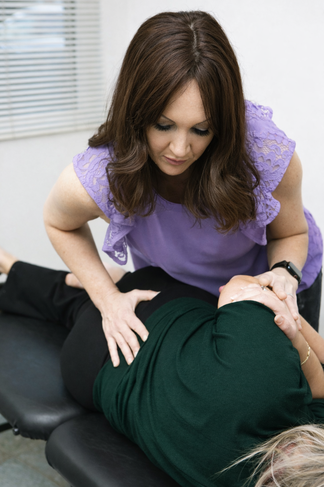
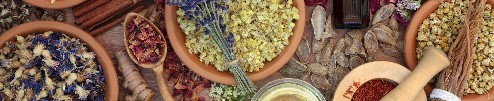

Acupuncture
Traditional needle therapy for pain relief, stress reduction, and systemic balance — delivered by experienced practitioners.
Learn More →
Chiropractic
Spinal alignment and musculoskeletal therapy for pain, mobility, and long-term structural health.
Learn More →Counselling & Psychotherapy
Individual therapy for mental health, trauma, and life transitions with a registered psychotherapist.
Learn More →
Naturopathic Medicine
Evidence-based natural medicine combining nutrition, botanical therapy, and lifestyle medicine.
Learn More →
Neurofeedback
Non-invasive brain training to improve focus, reduce anxiety, and optimize neurological function.
Learn More →
Nutritional Support & Supplements
Personalized nutrition guidance and supplement protocols grounded in your clinical biomarkers.
Learn More →Physiotherapy
Injury rehabilitation, chronic pain management, and movement optimization by registered physiotherapists.
Learn More →Reflexology & Lymphatic Drainage
Targeted pressure therapy and lymphatic stimulation to support circulation, detoxification, and recovery.
Learn More →
Registered Massage Therapy
Therapeutic massage for muscle tension, injury recovery, and parasympathetic nervous system support.
Learn More →
Traditional Chinese Medicine
Holistic medicine using acupuncture, herbal formulas, and time-tested clinical wisdom.
Learn More →